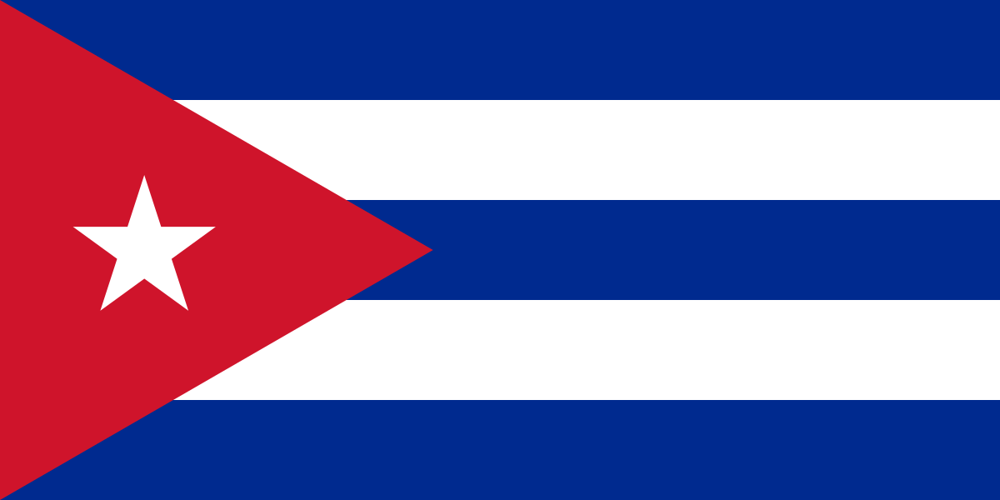
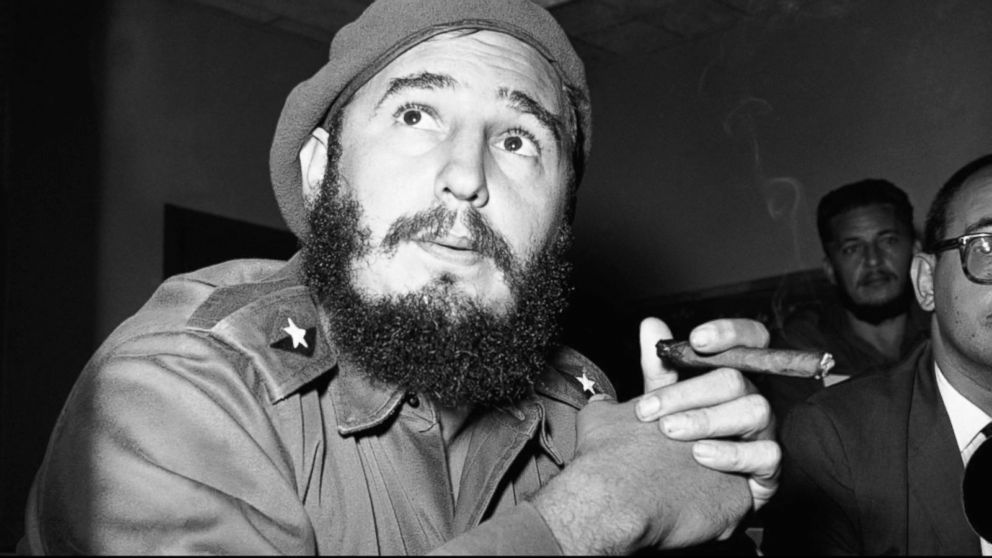
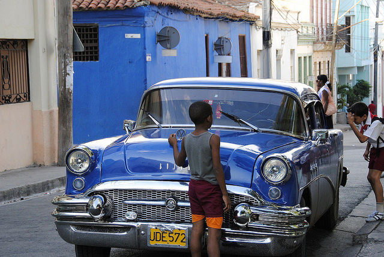
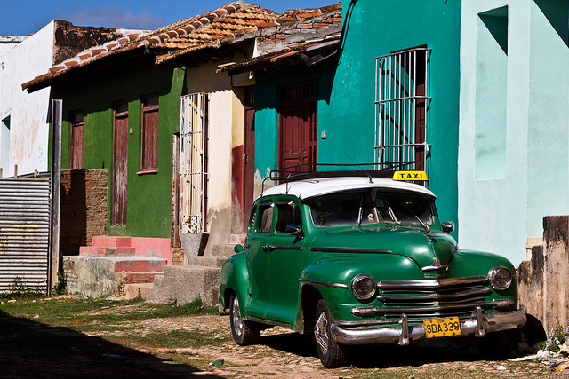
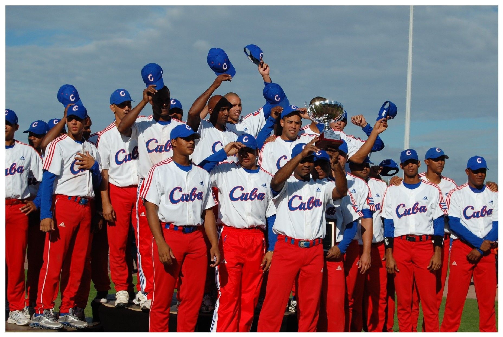
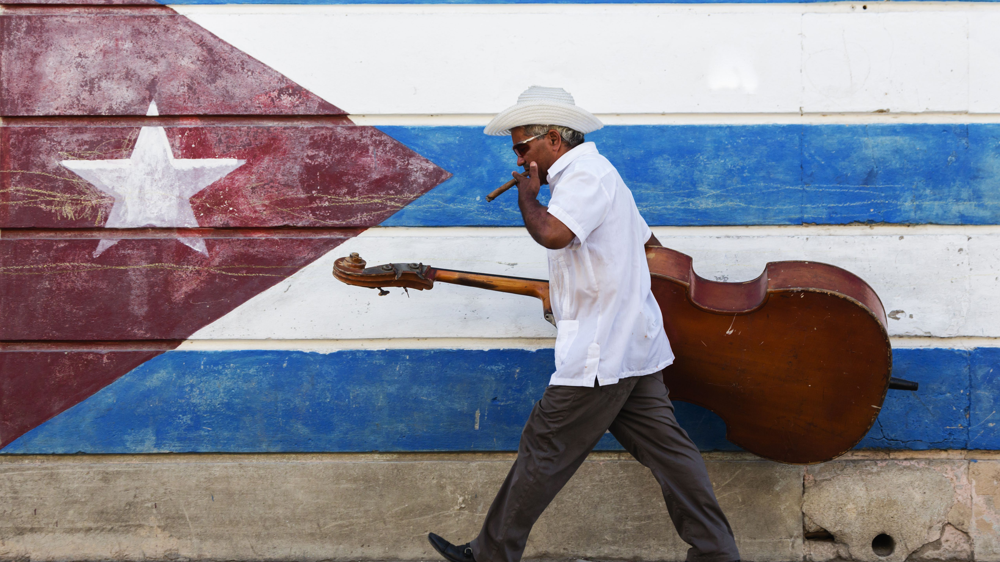

<body>
</body>

</html>

<!DOCTYPE html>
<html lang="en">

<!-- I made this in like two hours so it's got some rough edges -->

<head>
    <meta charset="UTF-8">
    <meta charset="UTF-8">
    <link href="https://fonts.googleapis.com/css2?family=Playfair+Display&display=swap" rel="stylesheet">
    <meta name="viewport" content="width=device-width, initial-scale=1.0">
    <script language="javascript" type="text/javascript" src="./libraries/p5.min.js"></script>
    <script language="javascript" type="text/javascript" src="./circle_picture.js"></script>
    <link rel="stylesheet" type="text/css" href="style.css">

    <title>Cuba</title>
</head>

<body>
    <div class="introContainer">
        <div class="intro fade">
            <h1>CUBA</h1>
            <h2>THE RISE OF CASTRO</h2>
        </div>
    </div>

    <div class="first">
        <p>Before the arrival of Christopher Columbus, Cuba was home to around 100,000 indigenous peoples with many distinct cultural groups. However, in 1492, the arrival of the Spanish began an era of colonialization in Cuba's history that lasted over
            400 years until 1902.
        </p>
        <p>
            As a result of the Spanish colonialization of Cuba, it's official language is Spanish. The spoken language itself, however, is a creolized form of Spanish and the native langauges. The prevailing religion is Roman Catholicism, also coming from Spain.
        </p>
        <div class="flagContainer">
            <div class="row">
                <div class="column">
                    
                </div>
                <div class="column">
                    <p>Cuba's flag was born during its fight for independence. The flag to the left was created in 1849, but not adopted until 1902 when Cuba officially became an independent nation.</p>
                    <p>The three blue stripes represent the three original departments of Cuba, the white stripes represented light and purity, and the red triangle represented the three French ideals of liberty, equality, and fraternity. In addition, the
                        triangle was red to represent blood and courage.</p>
                </div>
            </div>
        </div>
        <p>Cuba had several failed reblelions in the 19th century to end the Spanish rule. However, the Spanish–American War resulted in the Spanish withdrawing from the island in 1898, and following three point five years of US military rule, Cuba gained
            independence in 1902.</p>

        <p>Currently, Cuba is a socialist state. According to their constitution, they are officially a "Marxist–Leninist socialist state". In addition to the deas of Marx and Lenin, a man named José Martí had a very important role in liberating Cuba, and
            his influence on the political system can be seen today. </p>

        <div class="fielContainer">
            <div class="row">
                <div class="column">
                    <p>Fidel Castro is one of the most influential leaders in Cuban history. He held office for 46 years, from the 3rd of October 1965 to the 19th of April 2011. There are many important events associated with his name, but two of the most
                        important are the Cuban Revolution and the Cuban Missle Crisis. </p>
                    <p>Castro helped led the Cuban Revolution movement in overthrowing the former president Fulgencio Batista. He then assumed power as both the leader of the military and the Prime Minister of Cuba. Castro turned Cuba into a one-party socialist
                        state under the Communist Party rule. The united states opposed his rule and tried many times to remove him from power. This led to Cuba allying with the Soviet Union, and the placement of nuclear weapons in Cuba by the Soviets.
                        The Cuban Missle Crisis, as it has become to be known, was a defining moment of the Cold War in 1962. </p>
                </div>
                <div class="column">

                    
                </div>
            </div>
        </div>

        <div class="carsContainer">
            <div class="row">
                <div class="column">
                    
                </div>
                <div class="column">
                    <p>As a result of Castro's ban on the import of foreign vehicles, most cars in Cuba are old, colorful 1950's American vehicles. This is complemented by the colorful architecture of the buildings in Cuba resulting from a series of architectural
                        revolutions. </p>
                </div>
            </div>
            <div class="row">
                <div class="column">
                    <p> That restriction has since been lifted, but the same colorful vehicles can be seen all over Cuba. They were kept alive by handcrafted parts and the ingenuity of the Cuban people. Now, they are a symbol of their past and bring a sense
                        of pride to the people who own them.</p>
                </div>
                <div class="column">
                    
                </div>
            </div>
        </div>
        <div class="sportsContainer">
            <div class="row">
                <div class="column">
                    <p>Among the more popular sports in Cuba, Baseball is an important part of Cuban culture. It was banned by the Spanish during their rule, but secret games took place as a way to revolt against Spain. Fidel Castro was an avid baseball
                        player before he became a political figure and promoted the game. Today, Cuba has one of the best baseball teams in the world. </p>
                </div>
                <div class="column">
                    
                </div>
            </div>
        </div>
        <div class="womenRightsContainer">
            <p>The Cuban constitution guarantees equal rights for men and women. Nearly half of the people in Cuba's parliament are women, and about 43% of the labor force is women as well. Cuba is ahead of many countries in terms of women's legal rights,
                but there is still is a strong presence of gender roles and societal stereotypes within Cuba.</p>
        </div>
        <div class="musicContainer">
            <div class="row">
                <div class="column">
                    <p>Cuba is a rich mixture of many cultures, and with that comes a unique music style. The Spanish brought the guitar, African slaves brought unique percussion techniques and rhythms, and immigrants from all over Europe contributed to
                        the Cuban style of music. </p>
                </div>
                <div class="column">
                    
                </div>
            </div>
        </div>


    </div>
    <div class="showImage">
        <br>
    </div>
    <footer>
        <p>Ethan Haque HSS202-1</p>
    </footer>


</body>

</html>